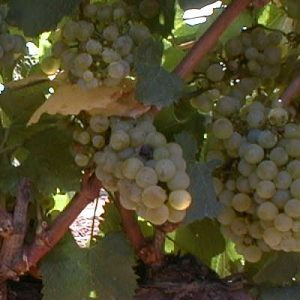

CHARDONNAY
Descubre la Elegancia
Descubre la Elegancia
La Chardonnay es la gran dama blanca del mundo del vino. Cultivada en nuestras parcelas más frescas sobre suelos arcillo-calcáreos en Cariñena, adquiere un perfil aromático intenso donde la madurez frutal se equilibra con una acidez fina.
Sus racimos pequeños y de color ámbar dorado en su plena madurez revelan vinos untuosos, equilibrados y con una capacidad de envolver el paladar que se ve realzada tras una cuidada crianza.

Un recorrido sensorial hacia lo exquisito
Aromas intensos a piña madura, mango y maracuyá que le aportan frescura y carácter exótico desde la primera impresión.
Deliciosas notas frutales que recuerdan a la manzana asada, pera jugosa y toques de melocotón de viña.
Si ha pasado por crianza en lías o barrica, desarrolla unos recuerdos lácticos, untuosos y notas a vainilla dulce.
Aparecen matices delicados de flor de almendro, acacia y ligero jazmín, que le otorgan finura al conjunto aromas.
Datos esenciales de nuestra joya blanca
| Variedad | Chardonnay (Vitis vinifera) |
| Origen | Región de Borgoña, Francia |
| Denominación | D.O. Cariñena, Aragón (España) |
| Vendimia | Manual nocturna, primera quincena de septiembre |
| Elaboración | Fermentación controlada y reposo sobre lías finas |
| Graduación | 13,0 – 14,0 % Vol. |
| Temperatura | Servir a 8 – 10 °C |
| Maridaje | Aves asadas, pescados grasos, arroces melosos y quesos semicurados |
Descubre la elegancia de nuestro Chardonnay disponible en la tienda.
Ver en la Tienda →